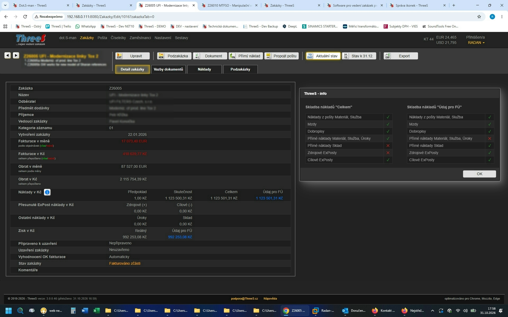

Technické informace o provozu, připojení, umístění serveru a zabezpečení systému ThreeS.

Vedle funkční stránky řeší ThreeS také bezpečný provoz, vzdálený přístup a lepší kontrolu nad firemními daty.
ThreeS běží na vzdáleném serveru a klade extrémní důraz na zabezpečení vašich dat a informací. Aplikace může být součástí vašeho stávajícího fyzického systému, nebo nainstalovaná na pronajatém serveru.